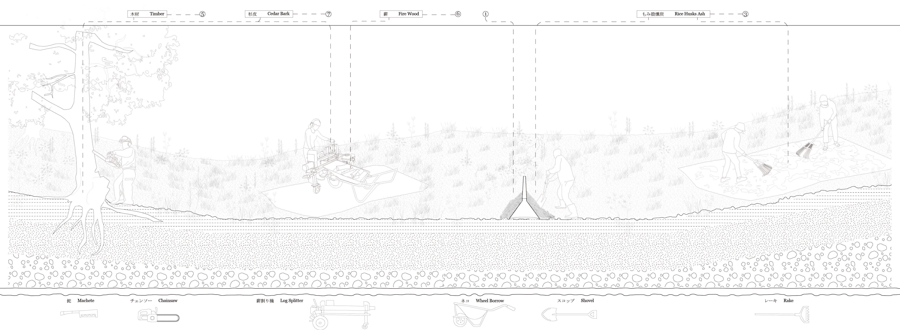
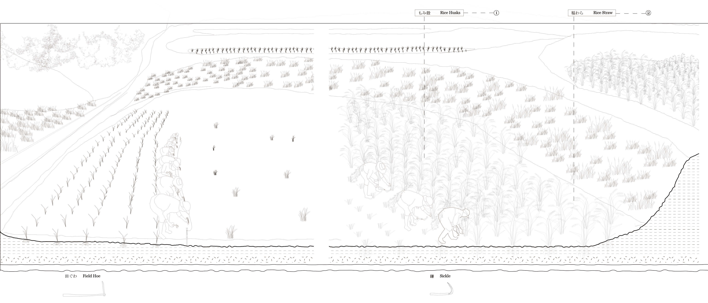

Kamanuma

A sequence of existing rooms is read through material, light and use. The page is organized as a photographic record of small spatial shifts rather than a single representative view.
既存の空間の連なりを、素材・光・使われ方から読み直す。単一の代表カットではなく、小さな空間的変化の連続として構成する。
The title, image order and drawing positions are set; the original project statement, location and year will follow once confirmed.
タイトル、写真の順序、図面の位置を先に定めた。設計主旨・場所・年は、元資料を確認後に追記する。
Rooms and
thresholds
Photographs alternate between the domestic scale of the interior and the materially distinct parts of the existing building.
室内の生活スケールと、既存建物の異なる素材感をもつ部分を交互に見せる。


Drawing
record
The drawings remain at their original density, introducing the project as a relation between measured space and lived detail.
図面は元の情報密度を保ち、計測された空間と生活のディテールとの関係を示す。

